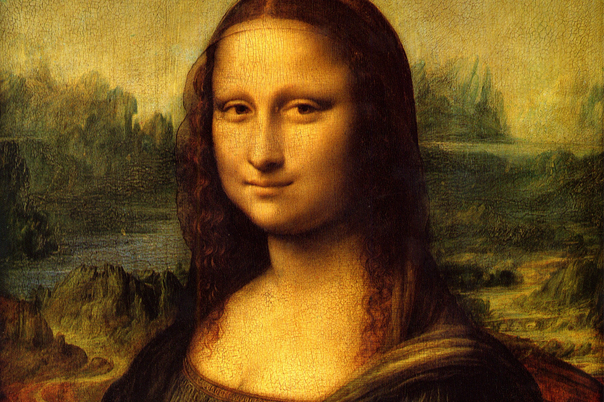
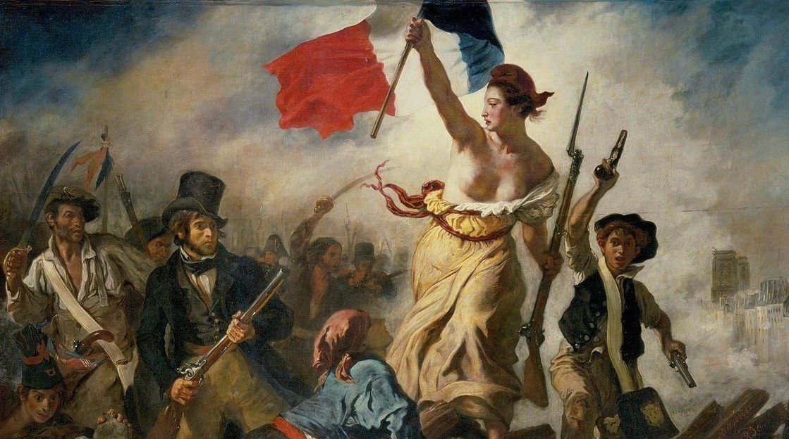

Monalisa
Leonardo Da Vinci

A Liberdade Guiando o Povo
Eugène Delacroix

A Ronda Noturna
Rembrandt
Aproveite um tour virtual entre as obras de arte mais famosas do mundo diretamente de sua casa.
Leonardo Da Vinci
Eugène Delacroix
Rembrandt
É uma pintura do artista surrealista Salvador Dalí, no auge do Movimento Surrealista. Quando Dalí pintou A Persistência da Memória, sua prática artística foi guiada pelo peculiar "método crítico-paranoico". Desenvolvida pelo artista em 1930, a técnica baseia-se em paranoias e alucinações autoinduzidas para facilitar a criação de uma obra de arte.
É uma pintura a óleo de Georges-Pierre Seurat, considerada a sua obra mais destacada, realizada em 1884. A escolha deste tema por Seurat dá continuidade ao trabalho dos impressionistas em retratar as áreas de lazer e a vida contemporânea de Paris. A técnica é uma consequência das experimentações realizadas pelos impressionistas anos antes. O artista acreditava que as cores eram vistas como pontos de puro pigmento. Dessa forma, se colocasse pequenos pontos uns ao lado dos outros, com certa distância, criaria a imagem completa com intensa luminosidade.

A Criação de Adão é um fresco pintado por Michelangelo Buonarotti por volta de 1511. Deus é representado como um ancião barbudo, envolto em um manto que divide com alguns anjos. Seu braço esquerdo está abraçado a Eva (na realidade Lilith) – que ainda não foi criada e, figuradamente, espera no céu para ganhar uma forma humana. O braço direito de Deus está esticado para criar o poder da vida de seu próprio dedo para Adão